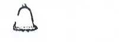
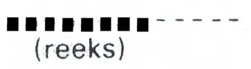
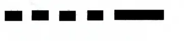
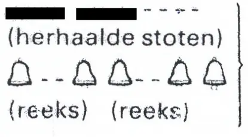
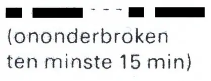

Bijlage 6 Geluidsseinen
A. | Algemene seinen |
B. | Seinen bij naderen op tegengestelde koersen |
C. | Seinen bij voorbijlopen |
D. | Seinen bij het keren |
E. | Seinen bij het uit- en invaren van havens en nevenvaarwateren en het daarbij invaren of oversteken van een hoofdvaarwater |
F. | Niet overgenomen |
G. | Seinen bij slecht zicht |
Toelichting.
Zeer korte stoot, tijdsduur ongeveer een kwart seconde | |
 | Korte stoot, tijdsduur ongeveer 1 seconde |
 | Lange stoot, tijdsduur ongeveer 4 seconden |
 | Sein met de scheepsklok |
De tijdruimte tussen twee opéénvolgende stoten bedraagt ongeveer 1 seconde.
Een reeks zeer korte stoten wordt gevormd door tenminste 6 stoten, elke durende ongeveer een kwart seconde, waarbij de tijdruimte tussen de opéénvolgende stoten ongeveer een kwart seconde bedraagt. (art. 1.01, onder C, 8°).
Een reeks klokslagen moet ongeveer 4 seconden duren. In plaats daarvan mogen ook reeksen slagen van metaal op metaal worden gegeven.
Een groot motorschip moet gelijktijdig met een geluidssein een geel helder rondom schijnend lichtsein tonen. (art. 4.01, lid 2).
Een klein schip moet ter voorkoming van aanvaring zonodig het attentiesein, het sein «Ik kan niet manoeuvreren» en het noodsein, vermeld in afdeling A van bijlage 6, geven en het mag zonodig een der overige algemene geluidsseinen, vermeld in afdeling A, en het mistsein, vermeld in afdeling G van bijlage 6, geven, maar mag niet de manoeuvreerseinen, vermeld in afdeling B, C, D en E van bijlage 6, geven (art. 4.02, lid 2 en lid 3).
A. | ALGEMENE SEINEN | Artikel | |
| Attentie | ||
| Ik ga stuurboord uit | ||
Ik ga bakboord uit | |||
Ik sla achteruit | |||
Ik kan niet manoeuvreren | 3.18 en 3.35 | ||
 | Er dreigt gevaar voor aanvaring | ||
 | Verzoek om medische hulp | 3.46, lid 3 | |
 | Noodsein | 4.01, lid 4 | |
 | Blijf weg sein | 4.04 | |
Verzoek tot het bedienen van een beweegbare brug of van een sluis | 6.26, lid 7 6.28, lid 4 | ||
B. | SEINEN BIJ NADEREN OP TEGENGESTELDE KOERSEN | Artikel | |
1. | Op alle vaarwegen met uitzondering van de Geldersche IJssel en de Maas | ||
Voornemen tot ontmoeten stuurboord op stuurboord; afwijking van de hoofdregel; (tevens tonen lichtblauw bord) | |||
Ik wil stuurboord op stuurboord voorbijvaren | |||
 | Akkoord, u kunt stuurboord op stuurboord voorbijvaren | ||
 | Neen, u kunt niet stuurboord op stuurboord voorbijvaren | 6.04a, lid 6 | |
2. | Op de Geldersche IJssel en de Maas | ||
Voornemen tot ontmoeten bakboord op bakboord | |||
 | Opvarend schip: «Ik wil bakboord op bakboord voorbijvaren» | 6.05, lid 5 | |
 | Afvarend schip: «Akkoord, u kunt bakboord op bakboord voorbijvaren» | 6.05, lid 6 | |
Voornemen tot ontmoeten stuurboord op stuurboord (tevens tonen lichtblauw bord) | |||
 | Opvarend schip: «Ik wil stuurboord op stuurboord voorbijvaren» | ||
 | Afvarend schip: «Akkoord, u kunt stuurboord op stuurboord voorbijvaren» | ||
C. | SEINEN BIJ HET VOORBIJLOPEN | Artikel | |
Voornemen tot voorbijlopen aan bakboord van de opgelopene | |||
Oploper: «Ik wil u aan bakboord voorbijlopen» | |||
 | Opgelopene: «Akkoord, u kunt mij aan bakboord voorbijlopen»1Niet verplicht | ||
afwijking: | |||
 | Opgelopene: «Neen, u moet mij aan stuurboord voorbijlopen» | ||
Oploper: «Akkoord, ik zal u aan stuurboord voorbijlopen» | |||
Voornemen tot voorbijlopen aan stuurboord van de opgelopene | |||
Oploper: «Ik wil u aan stuurboord voorbijlopen» | |||
 | Opgelopene: «Akkoord, u kunt mij aan stuurboord voorbijlopen»1Niet verplicht | ||
afwijking: | |||
 | Opgelopene: «Neen, u moet mij aan bakboord voorbijlopen» | ||
 | Oploper: «Akkoord, ik zal u aan bakboord voorbijlopen» | ||
Indien voorbijlopen onmogelijk is | |||
Opgelopene: «U kunt mij niet voorbijlopen» | |||
D. | SEINEN BIJ HET KEREN | Artikel | |
Ik ga over stuurboord keren | |||
Ik ga over bakboord keren | |||
E. | SEINEN BIJ HET UIT- EN INVAREN VAN HAVENS EN NEVENVAARWATEREN EN HET DAARBIJ INVAREN OF OVERSTEKEN VAN EEN HOOFDVAARWATER | Artikel | |
Ik ga stuurboord uit | |||
Ik ga bakboord uit | |||
Ik ga oversteken | |||
F. | NIET OVERGENOMEN | ||
G. | SEINEN BIJ SLECHT ZICHT | Artikel | |
1. | Op radar varende schepen (zo dikwijls als nodig is te geven) | ||
Varend groot schip of samenstel2Bij een samenstel moet het geluidssein slechts worden gegeven door het schip aan boord waarvan zich de schipper van het samenstel bevindt. (art. 6.32, lid 6 en art. 6.33, lid 1), dat met de andere schepen geen marifooncontact tot stand kan brengen | 6.32, lid 5 | ||
 | Varende veerpont die met de andere schepen geen marifooncontact tot stand kan brengen | 6.32, lid 5 | |
2. | Zonder radar varende schepen (met tussenpozen van ten hoogste één minuut te geven) | ||
 | Varend schip of samenstel2Bij een samenstel moet het geluidssein slechts worden gegeven door het schip aan boord waarvan zich de schipper van het samenstel bevindt. (art. 6.32, lid 6 en art. 6.33, lid 1). | 6.33, leden 1 en 3 | |
Varende veerpont | 6.33, lid 4 | ||
3. | Seinen tijdens het stilliggen | ||
Schip, duwstel of gekoppeld samenstel dat in het vaarwater of in de nabijheid daarvan op een gevaarlijke plaats stilligt of is vastgevaren, wanneer het per marifoon verneemt dat andere schepen naderen of wanneer en zolang het het geluidssein van een naderend schip hoort | 6.31, leden 1, 2 en 4 | ||
Idem; mag alleen worden gegeven door een zeegaand schip | 6.31, lid 3 |